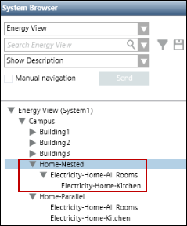
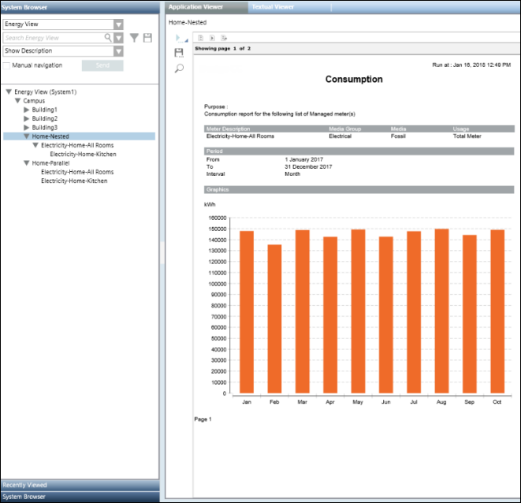
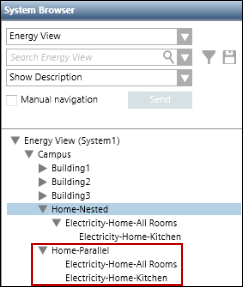
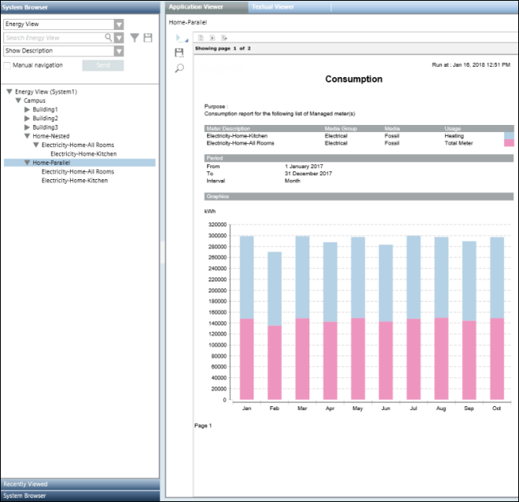

Concept of Nested Managed Meters
You need nested meters in your view hierarchy when you want to generate a report that includes the consumption details of only the first level meter.
In case of an aggregator node having nested managed meters, the report displays the data of only first level managed meters (parent meters) on executing the report by selecting the aggregator node. In the following example, Electricity-Home-Kitchen is a nested meter and Electricity-Home-All Rooms is the first level meter.

When you execute a report by selecting the Home-Nested aggregator node, then the data of only the Electricity-Home-All Rooms meter will display. The data of the nested meter Electricity-Home-Kitchen will not display.

In the example below, the meters Electricity-Home-All Rooms and Electricity-Home-Kitchen are parallel to each other on the Home-Parallel aggregator node.

When you execute a report by selecting the Home-Parallel aggregator node, then the data for both the meters, Electricity-Home-All Rooms and Electricity-Home-Kitchen will display.

In the above example, the meter Electricity-Home-Kitchen calculates the consumption of the kitchen whereas the Electricity-Home-All Rooms meter calculates the consumption of the entire house (including kitchen). If these 2 meters are placed parallel to each other and the report is executed by selecting the Home-Parallel node, the consumption of the kitchen will be computed from both meters which is incorrect. Therefore, to ensure that the consumption of Electricity -Home-Kitchen meter is not considered, it must be nested below Electricity-Home-All Rooms. In order to compute the consumption of only the kitchen, you must execute the report by selecting the Electricity-Home-Kitchen meter from the Home-Nested aggregator node.
In order to generate reports related to energy consumption, caching, and so on, you must configure certain parameters in the Configuration Page - Advanced Reporting.